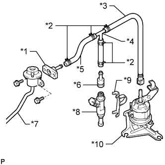
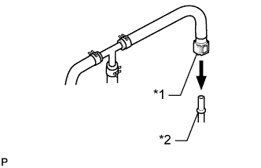
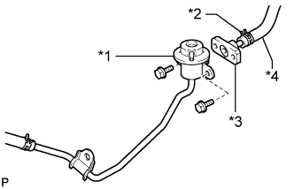
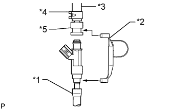
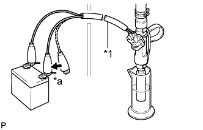

ТОПЛИВНАЯ ФОРСУНКА > ПРОВЕРКА |
| 1. ПРОВЕРЬТЕ ТОПЛИВНУЮ ФОРСУНКУ В СБОРЕ |
Измерьте сопротивление в соответствии со значениями, приведенными в таблице ниже.
| Контакты для подключения диагностического прибора | Условие | Заданные условия |
| 1 - 2 | 20°C (68°F) | 11,6-12,4 Ом |
| 2. ПРОВЕРЬТЕ ОБЪЕМ ВПРЫСКА И ГЕРМЕТИЧНОСТЬ |
Проверьте объем впрыска.
Сбросьте давление в топливной системе (Нажмите здесь).
Снимите топливный шланг с демпфера пульсаций в топливной системе (Нажмите здесь).
Снимите топливный шланг с топливного фильтра (Нажмите здесь).
Отсоедините регулятор давления топлива (Нажмите здесь).
|  |
Соберите SST, как показано на рисунке.
| *1 | SST (штуцер) |
| *2 | SST (фиксатор) |
| *3 | SST (соединитель топливопровода) |
| *4 | SST (тройник) |
| *5 | SST (шланг) |
| *6 | SST (переходник) |
| *7 | Регулятор давления топлива |
| *8 | Топливная форсунка |
| *9 | SST (зажим) |
| *10 | Топливный фильтр |
|  |
Приставьте SST к топливному фильтру.
| *1 | SST (соединитель топливопровода) |
| *2 | Топливный фильтр |
|  |
Закрепите регулятор давления на SST (штуцере) с помощью 2 болтов.
| *1 | Регулятор давления топлива |
| *2 | SST (фиксатор) |
| *3 | SST (штуцер) |
| *4 | SST (шланг) |
Установите кольцевое уплотнение на форсунку.
|  |
Соберите SST, как показано на рисунке.
| *1 | Виниловая трубка |
| *2 | SST (зажим) |
| *3 | SST (шланг) |
| *4 | SST (фиксатор) |
| *5 | SST (переходник) |
Поместите форсунку в мерный цилиндр.
Приведите в действие топливный насос (Нажмите здесь).
|  |
На 15 с подсоедините SST (провод) к форсунке и аккумуляторной батарее и измерьте объём впрыска топлива мерным цилиндром. Проверьте каждую форсунку 2-3 раза.
| *a | Подсоедините |
| *1 | SST (провод) |
Проверьте отсутствие утечек.
Не меняя условий проверки, отсоедините щупы SST (провод) от аккумуляторной батареи и убедитесь в отсутствии утечки топлива из форсунки.